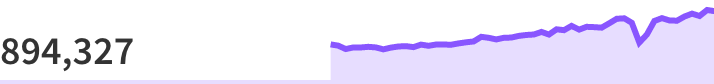
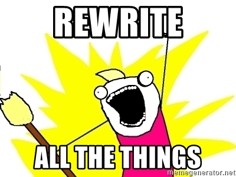
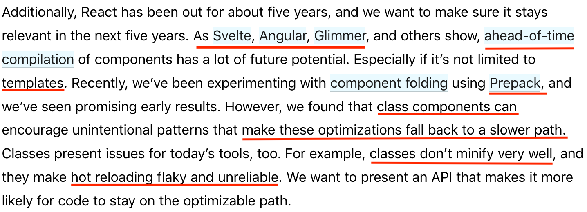
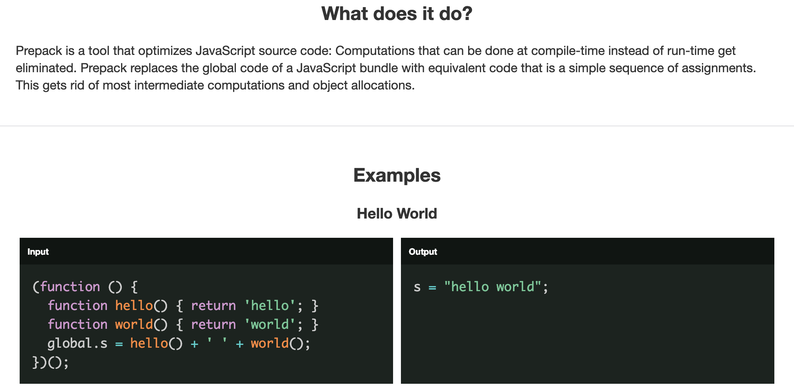
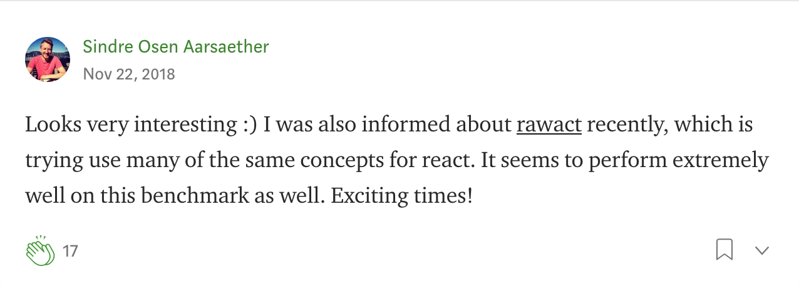
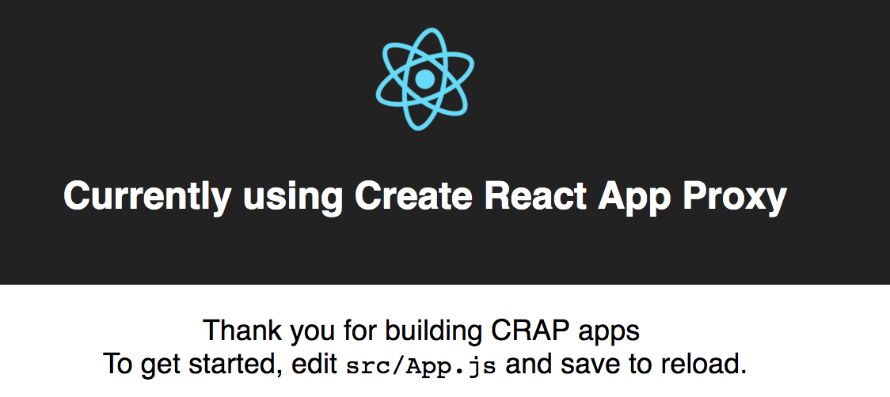

Co ona ma, czego nie mam ja?
Biblioteka React i jej klony
Perspektywa... ma znaczenie :)


A Vue?


|
|
|

|

|
Porównujemy?
Kod wynikowy, rozmiary, wydajność, szybkość
Ale...
Tree shaking, różne konfiguracje, wersje
Czemu ?

Czemu ?

|
|
|
||
|---|---|---|---|
| 🗣️ | A JavaScript library for building user interfaces | Fast 3kB alternative to React with the same modern API | 1 kB JavaScript micro-framework for building declarative web applications |
| 👍🏻 |
|
|
|
| 👎🏻 |
|
|
|
| 👀 |
|
|
|
| 🤔 | Pewniak, przyszłość | Zamiennik, w krytycznych sytuacjach | Mocno kibicuję, czekam na v2 |
Dlaczego React?
- Przełomowy, rozwijany. Tworzony reaktywnie :)
- React 16 = gruntowne zmiany, a API bez zmian
- Async Rendering = Time Slicing + Suspense
Problem: za dużo przepychania propsów
// ...
| PRZED | PO |
|---|---|
|  |
// ...
Fajne API?
Prepack?
Dalej?
Inaczej?
Dziękuję
- Lista 10 trendów JS: mat3e.github.io/trendy
- mat3e.github.io/talks/react-clones/karierait.html